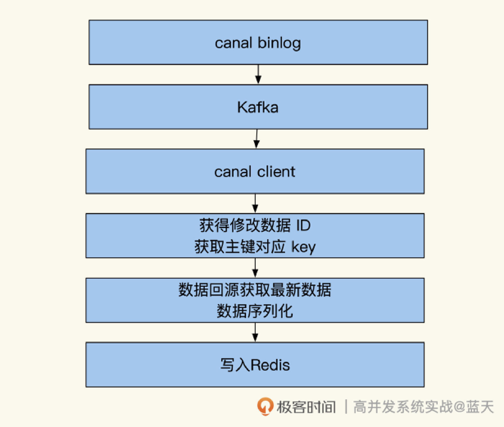
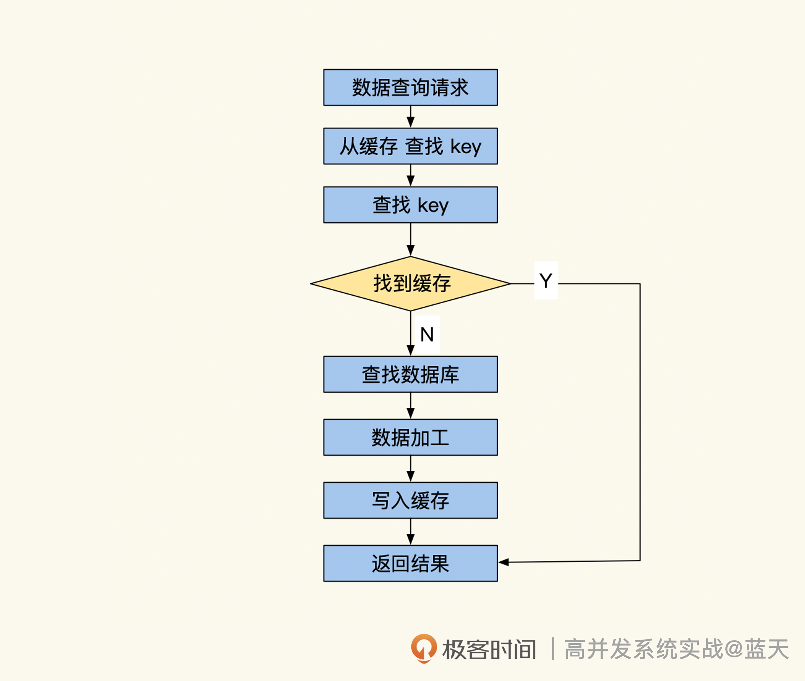
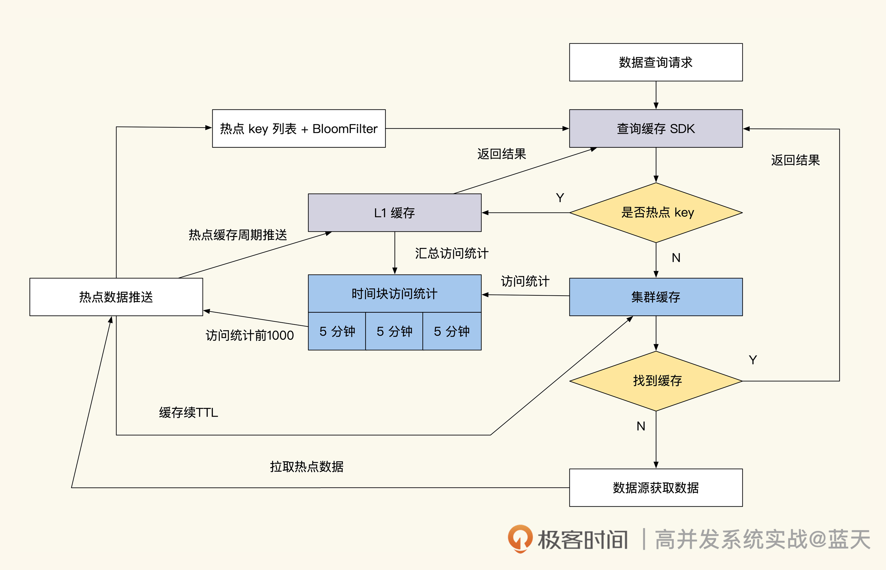
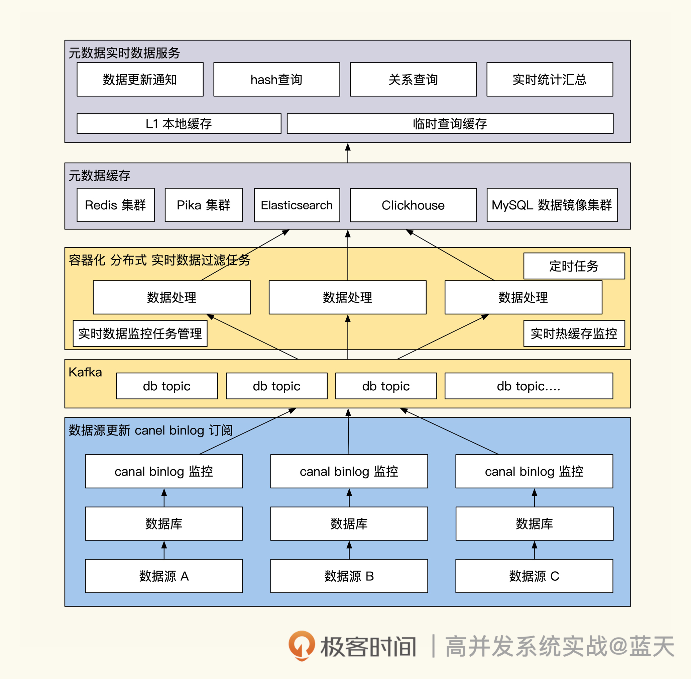
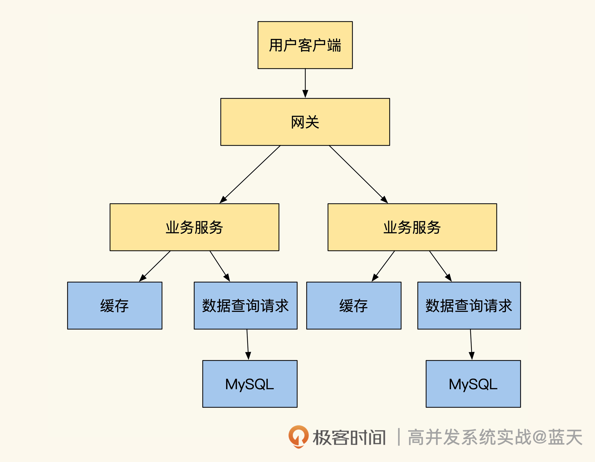
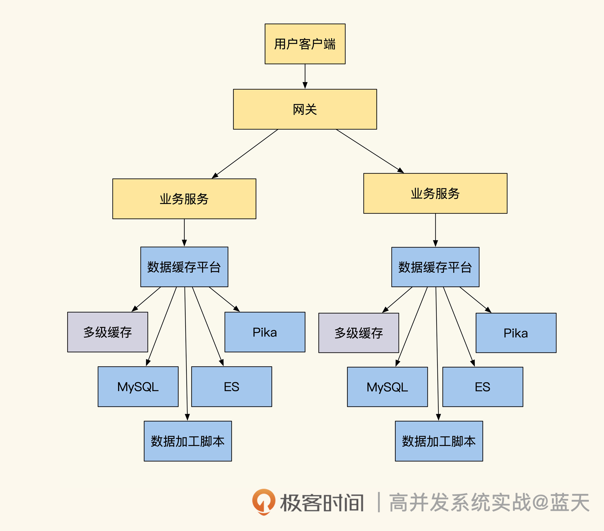

- 00 开篇词 高并发系统，技术实力的试金石.md.html
- 01 结构梳理：大并发下，你的数据库表可能成为性能隐患.md.html
- 02 缓存一致：读多写少时，如何解决数据更新缓存不同步？.md.html
- 03 Token：如何降低用户身份鉴权的流量压力？.md.html
- 04 同城双活：如何实现机房之间的数据同步？.md.html
- 05 共识Raft：如何保证多机房数据的一致性？.md.html
- 06 领域拆分：如何合理地拆分系统？.md.html
- 07 强一致锁：如何解决高并发下的库存争抢问题？.md.html
- 08 系统隔离：如何应对高并发流量冲击？.md.html
- 09 分布式事务：多服务的2PC、TCC都是怎么实现的？.md.html
- 10 稀疏索引：为什么高并发写不推荐关系数据库？.md.html
- 11 链路追踪：如何定制一个分布式链路跟踪系统 ？.md.html
- 12 引擎分片：Elasticsearch如何实现大数据检索？.md.html
- 13 实时统计：链路跟踪实时计算中的实用算法.md.html
- 14 跳数索引：后起新秀ClickHouse.md.html
- 15 实践方案：如何用C++自实现链路跟踪？.md.html
- 16 本地缓存：用本地缓存做服务会遇到哪些坑？.md.html
- 17 业务脚本：为什么说可编程订阅式缓存服务更有用？.md.html
- 18 流量拆分：如何通过架构设计缓解流量压力？.md.html
- 19 流量调度：DNS、全站加速及机房负载均衡.md.html
- 20 数据引擎：统一缓存数据平台.md.html
- 21 业务缓存：元数据服务如何实现？.md.html
- 22 存储成本：如何推算日志中心的实现成本？.md.html
- 23 网关编程：如何通过用户网关和缓存降低研发成本？.md.html
- 24 性能压测：压测不完善，效果减一半.md.html
- 答疑课堂 思考题答案（一）.md.html
- 结束语 为者常成，行者常至.md.html
- 捐赠
20 数据引擎：统一缓存数据平台
你好，我是徐长龙。
通过前四章，我们已经了解了不同类型的系统如何优化，其中有哪些关键技术点。不过除了这些基础知识之外，我们还要了解大型互联网是如何设计支撑一个高并发系统的。所以，在这个章节里我精选了几个案例，帮助你打开视野，看看都有哪些实用的内网服务设计。
任何一个互联网公司都会有几个核心盈利的业务，我们经常会给基础核心业务做一些增值服务，以此来扩大我们的服务范围以及构建产业链及产业生态，但是这些增值服务需要核心项目的数据及交互才能更好地提供服务。
但核心系统如果对增值业务系统做太多的耦合适配，就会导致业务系统变得十分复杂，如何能既让增值服务拿到核心系统的资源，又能减少系统之间的耦合？
这节课我会重点带你了解一款内网主动缓存支撑的中间件，通过这个中间件，可以很方便地实现高性能实体数据访问及缓存更新。
回顾临时缓存的实现
我们先回顾下之前展示的临时缓存实现，这个代码摘自之前的第二节课。
// 尝试从缓存中直接获取用户信息
userinfo, err := Redis.Get("user_info_9527")
if err != nil {
return nil, err
}
//缓存命中找到，直接返回用户信息
if userinfo != nil {
return userinfo, nil
}
//没有命中缓存，从数据库中获取
userinfo, err := userInfoModel.GetUserInfoById(9527)
if err != nil {
return nil, err
}
//查找到用户信息
if userinfo != nil {
//将用户信息缓存，并设置TTL超时时间让其60秒后失效
Redis.Set("user_info_9527", userinfo, 60)
return userinfo, nil
}
// 没有找到，放一个空数据进去，短期内不再访问数据库
// 可选，这个是用来预防缓存穿透查询攻击的
Redis.Set("user_info_9527", "", 30)
return nil, nil
上述代码演示了临时缓存提高读性能的常用方式：即查找用户信息时直接用ID从缓存中进行查找，如果在缓存中没有找到，那么会从数据库中回源查找数据，找到数据后，再将数据写入缓存方便下次查询。
相对来说这个实现很简单，但是如果我们所有业务代码都需要去这么写，工作量还是很大的。
即便我们会对这类实现做一些封装，但封装的功能在静态语言中并不是很通用，性能也不好。那有没有什么方式能统一解决这类问题，减少我们的重复工作量呢？
实体数据主动缓存
之前我们在第二节课讲过实体数据最容易做缓存，实体数据的缓存key可以设计为前缀+主键ID这种形式 。通过这个设计，我们只要拥有实体的ID，就可以直接在缓存中获取到实体的数据了。
为了降低重复的工作量，我们对这个方式做个提炼，单独将这个流程做成中间件，具体实现如下图：

结合上图，我们分析一下这个中间件的工作原理。我们通过canal来监控MySQL数据库的binlog日志，当有数据变更时，消息监听端会收到变更通知。
因为变更消息包含变更的表名和所有变更数据的所有主键ID，所以这时我们可以通过主键ID，回到数据库主库查询出最新的实体数据，再根据需要来加工这个数据，并将其推送数据到缓存当中。
而从过往经验来看，很多刚变动的数据有很大概率会被马上读取。所以，这个实现会有较好的缓存命中率。同时，当我们的数据被缓存后会根据配置设置一个TTL，缓存在一段时间没有被读取的话，就会被LRU策略淘汰掉，这样还能节省缓存空间。
如果你仔细思考一下，就会发现这个设计还是有缺陷：如果业务系统无法从缓存中拿到所需数据，还是要回数据库查找数据，并且再次将数据放到缓存当中。这和我们设计初衷不一致。为此，我们还需要配套一个缓存查询服务，请看下图：

如上图所示，当我们查找缓存时如果没找到数据，中间件就会通过Key识别出待查数据属于数据库的哪个表和处理脚本，再按配置执行脚本查询数据库做数据加工，然后中间件将获取的数据回填到缓存当中，最后再返回结果。
为了提高查询效率，建议查询服务使用类似Redis的纯文本长链接协议，同时还需要支持批量获取功能，比如Redis的mget实现。如果我们的数据支撑架构很复杂，并且一次查询的数据量很大，还可以做成批量并发处理来提高系统吞吐性能。
落地缓存服务还有一些实操的技巧，我们一起看看。
如果查询缓存时数据不存在，会导致请求缓存穿透的问题，请求量很大核心数据库就会崩溃。为了预防这类问题我们需要在缓存中加一个特殊标志，这样查询服务查不到数据时，就会直接返回数据不存在。
我们还要考虑到万一真的出现缓存穿透问题时，要如何限制数据库的并发数，建议使用SingleFlight合并并行请求，无需使用全局锁，只要在每个服务范围内实现即可。
有时要查询的数据分布在数据库的多个表内，我们需要把多个表的数据组合起来或需要刷新多个缓存，所以这要求我们的缓存服务能提供定制脚本，这样才能实现业务数据的刷新。
另外，由于是数据库和缓存这两个系统之间的同步，为了更好的排查缓存同步问题，建议在数据库中和缓存中都记录数据最后更新的时间，方便之后对比。
到这里，我们的服务就基本完整了。当业务需要按id查找数据时，直接调用数据中间件即可获取到最新的数据，而无需重复实现，开发过程变得简单很多。
L1缓存及热点缓存延期
上面我们设计的缓存中间件已经能够应付大部分临时缓存所需的场景。但如果碰到大并发查询的场景，缓存出现缺失或过期的情况，就会给数据库造成很大压力，为此还需要继续改进这个服务。
改进方式就是统计查询次数，判断被查询的key是否是热点缓存。举个例子，比如通过时间块异步统计5分钟内缓存key被访问的次数，单位时间内超过设定次数（根据业务实现设定）就是热点缓存。
具体的热点缓存统计和续约流程如下图所示：

对照流程图可以看到，热点统计服务获取了被认定是热点的key之后，会按统计次数大小做区分。如果是很高频率访问的key会被定期从脚本推送到L1缓存中（L1缓存可以部署在每台业务服务器上，或每几台业务服务器共用一个L1缓存）。
当业务查询数据时，业务的查询SDK驱动会通过热点key配置，检测当前key是否为热点key，如果是会去L1缓存获取，如果不是热点缓存会去集群缓存获取数据。
而相对频率较高的key热点缓存服务，只会定期通知查询服务刷新对应的key，或做TTL刷新续期的操作。
当我们被查询的数据退热后，我们的数据时间块的访问统计数值会下降，这时L1热点缓存推送或TTL续期会停止继续操作，不久后数据会TTL过期。
增加这个功能后，这个缓存中间件就可以改名叫做数据缓存平台了，不过它和真正的平台还有一些差距，因为这个平台只能提供实体数据的缓存，无法灵活加工推送的数据，一些业务结构代码还要人工实现。
关系数据缓存
可以看到，目前我们的缓存还仅限于实体数据的缓存，并不支持关系数据库的缓存。
为此，我们首先需要改进消息监听服务，将它做成Kafka Group Consumer服务，同时实现可动态扩容，这能提升系统的并行数据处理能力，支持更大量的并发修改。
其次，对于量级更高的数据缓存系统，还可以引入多种数据引擎共同提供不同的数据支撑服务，比如：
- lua脚本引擎（具体可以回顾第十七节课）是数据推送的“发动机”，能帮我们把数据动态同步到多个数据源；
- Elasticsearch负责提供全文检索功能；
- Pika负责提供大容量KV查询功能；
- ClickHouse负责提供实时查询数据的汇总统计功能；
- MySQL引擎负责支撑新维度的数据查询。
你有没有发现这几个引擎我们在之前的课里都有涉及？唯一你可能感到有点陌生的就是Pika，不过它也没那么复杂，可以理解成RocksDB的加强版。
这里我没有把每个引擎一一展开，但概括了它们各自擅长的方面。如果你有兴趣深入研究的话，可以自行探索，看看不同引擎适合用在什么业务场景中。
多数据引擎平台
一个理想状态的多数据引擎平台是十分庞大的，需要投入很多人力建设，它能够给我们提供强大的数据查询及分析能力，并且接入简单方便，能够大大促进我们的业务开发效率。
为了让你有个整体认知，这里我特意画了一张多数据引擎平台的架构图，帮助你理解数据引擎和缓存以及数据更新之间的关系，如下图所示：

可以看到，这时基础数据服务已经做成了一个平台。MySQL数据更新时，会通过我们订阅的变更消息，根据数据加工过滤进程，将数据推送到不同的引擎当中，对外提供数据统计、大数据KV、内存缓存、全文检索以及MySQL异构数据查询的服务。
具体业务需要用到核心业务基础数据时，需要在该平台申请数据访问授权。如果还有特殊需要，可以向平台提交数据加工lua脚本。高流量的业务甚至可以申请独立部署一套数据支撑平台。
总结
这节课我们一起学习了统一缓存数据平台的实现方案，有了这个中间件，研发效率会大大提高。在使用数据支撑组件之前，是业务自己实现的缓存以及多数据源的同步，需要我们业务重复写大量关于缓存刷新的逻辑，如下图：

而使用数据缓存平台后，我们省去了很多人工实现的工作量，研发同学只需要在平台里做好配置，就能坐享中间件提供的强大多级缓存功能、多种数据引擎提供的数据查询服务，如下图所示：- 
我们回顾下中间件的工作原理。首先我们通过Canal订阅MySQL数据库的binlog，获取数据的变更消息。然后，缓存平台根据订阅变更信息实现触发式的缓存更新。另外，结合客户端SDK及缓存查询服务实现热点数据的识别，即可实现多级缓存服务。
可以说,数据是我们系统的心脏，如数据引擎能力足够强大，能做的事情会变得更多。数据支撑平台最大的特点在于，将我们的数据和各种数据引擎结合起来，从而实现更强大的数据服务能力。
大公司的核心系统通常会用多引擎组合的方式，共同提供数据支撑数据服务，甚至有些服务的服务端只需做配置就可以得到这些功能，这样业务实现更轻量，能给业务创造更广阔的增值空间。
思考题
L1缓存使用BloomFilter来减少L1缓存查询，那么BloomFilter的hash列表如何更新到客户端呢？
欢迎你在留言区与我交流讨论，我们下节课见！
© 2019 - 2023 Liangliang Lee. Powered by gin and hexo-theme-book.